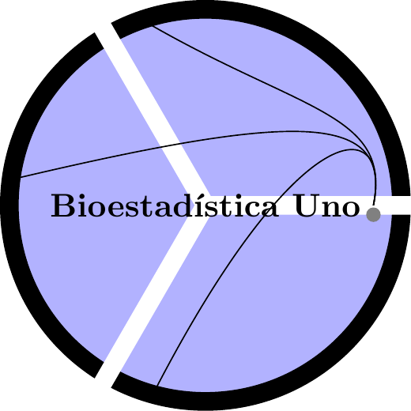

Prerrequisitos

El curso de bioestadística uno sólo tiene los siguientes prerrequisitios
0.1 Comportamentales
Tener disposición para hacer silencio y generar un buen ambiente de escucha en el aula de clase.
Tener la capacidad de acatar sugerencias para mejorar las técnicas de estudio ya adquiridas en procesos educativos pasados.
Saber tomar nota mientras el profesor explica los temas de ese día.
Repasar las notas de clase y complementar con la lectura del texto guía según se avanza en el desarrollo temático del curso.
0.2 Evaluativos
Tener los implementos básicos para una evaluación:
Lapicero.
Lapiz.
Borrador.
Calculadora.
Todos los celulares apagados.
Ir al baño antes de iniciar la evalualción.
No hay preguntas en el desarrollo de la evaluación.
Todas la maletas deben estar adelante.
0.3 Objetivos específicos
- Describir los conceptos de población, muestra, variables y datos, así como también, discriminar entre los diversos tipos de variables.
- Producir una descripción tabular y gráfica de los datos de la muestra y resumir tales datos mediante estadísticos de tendencia central, dispersión y distribución, todo esto apoyado en un programa computacional de estadística.
- Aprender el concepto de probabilidad considerando la misma como una estrategia para cuantificar fenómenos aleatorios y aplicar la teoría matemática básica sobre el cálculo de probabilidades.
- Explicar el concepto de variable aleatoria y de modelo de distribución de probabilidad, así como también, discriminar entre diversos tipos de variables aleatorias y sus modelos asociados (por ejemplo, Binomial, Normal, Poisson, etc.)
0.4 Fechas de Evaluación primer semestre 2023
Primer parcial Presencial (20 \(\%\)) - Fecha: Miércoles \(30\) de Agosto
Segundo Parcial Presencial (20 \(\%\)) - Fecha: Miércoles \(27\) de Septiembre
Tercer Parcial Presencial (20 \(\%\)) - Fecha: Miércoles \(25\) de Octubre
Cuarto Parcial Presencial (Parcial Final) (20 \(\%\)) - Fecha: Viernes \(17\) de Noviembre
0.5 Video motivacional
0.5.2 Marte (The Martian) Misión Rescate - Audio Latino
Link Marte (The Martian) Misión Rescate - Audio Latino
0.6 Bibliografía del curso
Samuels, M., Witmer, J., & Schaffner, A. (2012). Statistics for the life sciences (4 ed.). Boston: Pearson Education.
Milton, J. S. (2001). Estadística para la biología y ciencias de la salud (3 ed.). Madrid: McGraw- Hill/Interamericana.
Daniel, W. W. 2004. Bioestadística. Base para el análisis de las ciencias de la salud. 4era. Ed. Limusa Wiley Noriega Editores. México.
Johnson, R. A. & Bhattacharyya, G. K. (2010). Statistics. Principles and Methods (6 ed.). New York: John Wiley and Sons, Inc
Zar, J. (1999). Biostatistical analysis (5 ed.). Prentice hall Upper Saddle River, NJ.
Zuur, A., Ieno, E., & Meesters, E. (2009). A Beginner’s Guide to R. Springer.